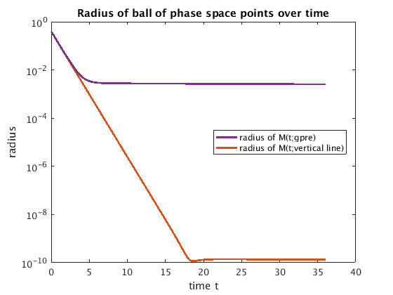

Demo of lifting error for Michaelis Menten kinetics
In this version of the demo stable fibers are aligned with the coordinates. Thus, the decay to the slow manifold changes mostly the y coordinate, causing only a small shift of the slow coordinate x.
Contents
- Define rotation matrix and apply to flow, slow manifold and stable fibers
- Microscopic system simulator
- Lines widths and colors for plotting
- Generic choice of Lifting, Restriction
- Slow manifold h_eps
- Stable fibers
- Plot basic geometry
- Select a particular stable fiber and zoom in
- Illustration of stable fiber/isochrone, projection g
- Convergence of trajectories within fiber
- Comparison of implicitly lifted slow flow Phi_tskip to expansion Phi_star
- Nonlinear system, defining implicit slow-flow map
- Compute the value, first and second derivative of Phi_star and Phi_tskip
- Compute value, 1st and 2nd derivative of Phi_tskip with respect to its argument v
- Theoretical asymptotic estimates
- Logarithmic plot of difference to expansion
- Save all variables, except figures
%#ok<*MINV> % clear addpath('tools');
Define rotation matrix and apply to flow, slow manifold and stable fibers
[rotmat,coords]=get_rotation('rotmat',eye(2),'names',{'x','y'}); %[rotmat,coords]=get_rotation('rotmat',[1,1; -1,1],'names',{'v','w'}); rotinv=inv(rotmat); map=@(f,x)cell2mat(arrayfun(f,x,'uniformoutput',false));
Microscopic system simulator
ScIVP is a fixed-stepsize RK (Dormand-Prince) integrator. The resulting is differentiable with respect to x (but not with respect to time, since the number of steps is automatically adjusted with t).
lambda=0.5; kappa=1; epsilon=0.01; ode_rhs=@(x,y)[... epsilon*(-x+(x+kappa-lambda).*y);... x-(x+kappa).*y]; rk_stepsize=0.1; hjac=1e-4; M=@(t,u0)ScIVP(@(t,u)ode_rhs(u(1,:),u(2,:)),u0,[0,t],ceil(abs(t)/rk_stepsize),'rot',rotmat);
Lines widths and colors for plotting
clr=colormap(lines);
ldeco={'linewidth',2};
Generic choice of Lifting, Restriction
R=@(u)u(1,:); L_level=0.5; L=@(x)[x;L_level+zeros(size(x))];
Slow manifold h_eps
slow_mf_maple returns the expansion coefficients of the slow manifold in epsilon. h_eps is the graph of the slow manifold, expanded up to 3rd order in epsilon. These functions are in the unrotated (aligned to first order) coordinates x-y.
nx=1001; xrange=linspace(-0.3,0.5,nx); sm_eps_order=length(slow_mf_maple(xrange(1),kappa,lambda))-1; m_epsilon=@(x,ord)x(1:ord+1)*(epsilon.^(0:ord)'); slowmf_xy=@(x)m_epsilon(slow_mf_maple(x,kappa,lambda),sm_eps_order); slowgraph_xy=@(xr)map(@(x)[x;slowmf_xy(x)],xr); h_eps=rotmat*slowgraph_xy(xrange);
Stable fibers
xf=fiber_graph_xy(x,y) returns, for a given base point (x,slowmf(x)) on the slow manifold and a deviation y, to which value the x coordinate shifts. So, M(t;(xf,slowmf(x)+y))-M(t;(x,slowmf(x))) goes to zero with decay rate of order 1. The function returns the expansion coefficients in epsilon. These functions are in the unrotated (aligned to first order) coordinates x-y.
fib_eps_order=length(fiber_maple(xrange(1),slowmf_xy(xrange(1)),kappa,lambda))-1; fiber_xy=@(u)m_epsilon(fiber_maple(u(1),u(2),kappa,lambda),fib_eps_order); fiber_dev_xy=@(x,ydev)map(@(yd)fiber_xy(slowgraph_xy(x)+[0;yd]),ydev); fiber_graph_xy=@(x0,ydev)[fiber_dev_xy(x0,ydev);slowmf_xy(x0)+ydev];
Plot basic geometry
Phase portrait with slow manifold, stable fibers (isochrones) and a few sample trajectories.pbase(1),pgp(1),pV(1),pgpe(1),pVe(1)
plot_geometry;
Select a particular stable fiber and zoom in
The selection is done in the unrotated coordinates. Then the fiber is rotated (to vw_g_pre).
x0=0.2; xy0=slowgraph_xy(x0); vw0=rotmat*xy0; ny=5; y_dev=linspace(-0.2,0.2,ny); g_pre=fiber_graph_xy(x0,y_dev); vw_g_pre=rotmat*g_pre;
Illustration of stable fiber/isochrone, projection g
We plot the expansion of the stable fiber (isochrone) vw_g_pre (pre-image under g) of (x0,y0)=(0.2,h(0.2)) in rotated coordinates, which is a curve transversal to the slow manifold. We observe how forward trajectories starting from points on this isochrone converge to each other. In contrast, trajectories starting from a set of initial conditions on V={(x0,y): y in R} show long term differences on the order of epsilon (unrotated) and of order 1 (for the rotated coordinates). This demonstrates that V is only a first-order approximation of g_pre, even in the unrotated coordinates.
t0=min(2/(epsilon),-log(eps)); [~,tr,Mg_pre]=M(t0,vw_g_pre); % forward images of g_pre [~,~,Mvert]=M(t0,vw0(:,ones(1,ny))+[zeros(1,ny);y_dev]); % forward images of {slow var =const} plot_fiber_image;
Convergence of trajectories within fiber
The stable fiber g_pre is a 3rd order approximation in epsilon. For non-zero epsilon, trajectories starting on g_pre converge to each other at a rate r of order 1 until exp(rt)~epsilon^3 (about t=10 for epsilon=0.1). In contrast, trajectories starting from V={(x0,y): y in R} only converge to each other until exp(rt)~epsilon.
plot_fiber_convergence;
Comparison of implicitly lifted slow flow Phi_tskip to expansion Phi_star
Nonlinear system, defining implicit slow-flow map
the integration time for Phi_star is close to be of order 1 in the slow time. Since the ODE is written in the fast time, this corresponds to delta=0.25/epsilon. We evaluate the flow at some point vbase in the domain of the lifting operator L. and in the points vbase-hjac, vbase+hjac.
F=@(v1,v0,delta,tskip)R(M(tskip,L(v1)))-R(M(tskip+delta,L(v0))); delta_test=0.25/epsilon; vbase=-0.1; hdev=hjac*[-1,0,1];
Compute the value, first and second derivative of Phi_star and Phi_tskip
by finite differences with deviation about hdev. First the values and derivatives of Phi_star, using the 3rd-order expansion are computed. The result Phi_star_xLfit is 0.5*Phi_star'', Phi_star', and Phi_star in xL.
The stable fiber projection g from dom L onto the slow manifold C_eps={(x,h_eps(x)} may be obtained as the inverse of x->fiber([x;L_level-slowmf(x)]): g(xL)=x0, fiber([x;L_level-slowmf(x)])=g^(-1)(x). A convenient approach to investigating the error of Phi_tskip is to pick a point (x0,slowmf(x0)) on the slow manifold C_eps, then determine xL=fiber([x0;L_level-slowmf(x0)]), which can be used as the argument of Phi_tskip, knowing that the true implicitly defined slow flow is Phi_star=fiber([M(delta;(x0,h_eps(x0))_1;L_level]).
x_g=@(xy)ScSolve(@(x)fiber_xy([x;xy(2)])-xy(1),xy(1),'print',0);
g_proj=@(vw)rotmat*slowgraph_xy(x_g(rotinv*vw));
Phi_star=@(delta,v0)ScSolve(@(v1)R(g_proj(L(v1)))-R(M(delta,g_proj(L(v0)))),v0);
Phi_star_tskip=@(delta,v0,tskip)ScSolve(@(v1)R(M(tskip,(g_proj(L(v1)))))-R(M(delta+tskip,g_proj(L(v0)))),v0);
Phi_star_dev=map(@(v)Phi_star(delta_test,v),vbase+hdev);
Phi_star_fit=polyfit(hdev,Phi_star_dev,2);
it=1, |cor|=0.0124694, |res|=0.0124461 it=2, |cor|=7.79633e-07, |res|=7.78079e-07 it=3, |cor|=2.94797e-15, |res|=2.94209e-15 it=1, |cor|=0.0124555, |res|=0.0124322 it=2, |cor|=7.77302e-07, |res|=7.75752e-07 it=3, |cor|=2.93406e-15, |res|=2.92821e-15 it=1, |cor|=0.0124415, |res|=0.0124182 it=2, |cor|=7.74977e-07, |res|=7.73431e-07 it=3, |cor|=2.92016e-15, |res|=2.91434e-15
Compute value, 1st and 2nd derivative of Phi_tskip with respect to its argument v
The derivatives are approximated by finite differences with deviation about hdev. First the true derivative, using the 3rd-order approximation. The result Phi_tskip_fit is 0.5*Phi_tskip'', Phi_tskip', and Phi_tskip in vbase.
nt=15; % number of healing times to check % compute approx Phi_tskip for range of healing times tskip tskipmax=min(30,-log(eps)); tskip=linspace(1,tskipmax,nt); conv=[]; for i=nt:-1:1 for j=1:3 [Phi_tskip_dev(i,j),conv(j)]=ScSolve(@(z)F(z,vbase+hdev(j),delta_test,tskip(i)),vbase); end Phi_tskip_fit(i,:)=polyfit(hdev,Phi_tskip_dev(i,:),2); fprintf('i=%d of %d, tskip=%g, Phi_tskip_fit=(%g,%g,%g) (converged=(%d,%d,%d)\n',... i,length(tskip),tskip(i),Phi_tskip_fit(i,:),conv); end
it=1, |cor|=0.0123967, |res|=0.0103355 it=2, |cor|=2.64866e-05, |res|=2.2177e-05 it=3, |cor|=1.18543e-10, |res|=9.9254e-11 it=4, |cor|=1.32598e-16, |res|=1.11022e-16 it=1, |cor|=0.0124831, |res|=0.0104076 it=2, |cor|=2.68545e-05, |res|=2.24858e-05 it=3, |cor|=1.21831e-10, |res|=1.0201e-10 it=4, |cor|=6.46396e-16, |res|=5.41234e-16 it=1, |cor|=0.0125695, |res|=0.0104796 it=2, |cor|=2.7225e-05, |res|=2.27967e-05 it=3, |cor|=1.25187e-10, |res|=1.04824e-10 it=4, |cor|=1.65738e-16, |res|=1.38778e-16 i=15 of 15, tskip=30, Phi_tskip_fit=(0.13044,0.860499,-0.0875437) (converged=(1,1,1) it=1, |cor|=0.012395, |res|=0.0104615 it=2, |cor|=2.47913e-05, |res|=2.10076e-05 it=3, |cor|=9.7197e-11, |res|=8.2362e-11 it=4, |cor|=8.18872e-17, |res|=6.93889e-17 it=1, |cor|=0.0124814, |res|=0.0105344 it=2, |cor|=2.51357e-05, |res|=2.13e-05 it=3, |cor|=9.98927e-11, |res|=8.46486e-11 ...
Theoretical asymptotic estimates
We compare the errors to the predicted asymptotic error decay rate. evt computes the eigenvectors of the linearization along the trajectory on the slow manifold, starting from (x0,h_eps(x0))
evt=@(t,x0)sort(eig(ScJacobian(@(x)M(t,x),x0,hjac)));
t_run=delta_test;
ev_exp=evt(t_run,M(0,g_proj(vbase)));
ev=log(ev_exp)/t_run;
d_tr=min(abs(ev(1,:))); % transversal attraction rate
Logarithmic plot of difference to expansion
plot_lifting_error;
Save all variables, except figures
save_var_names=remove_figures(whos);
save('kinetics_results.mat',save_var_names{:});